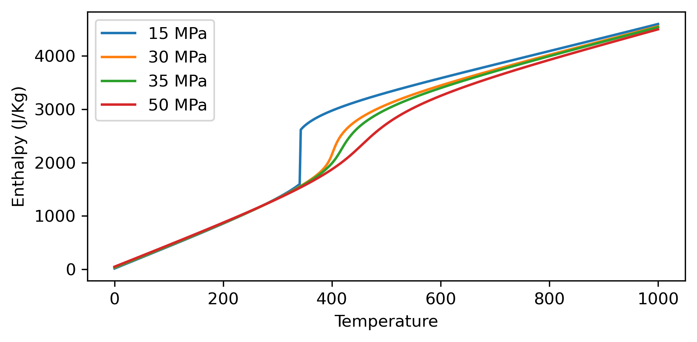
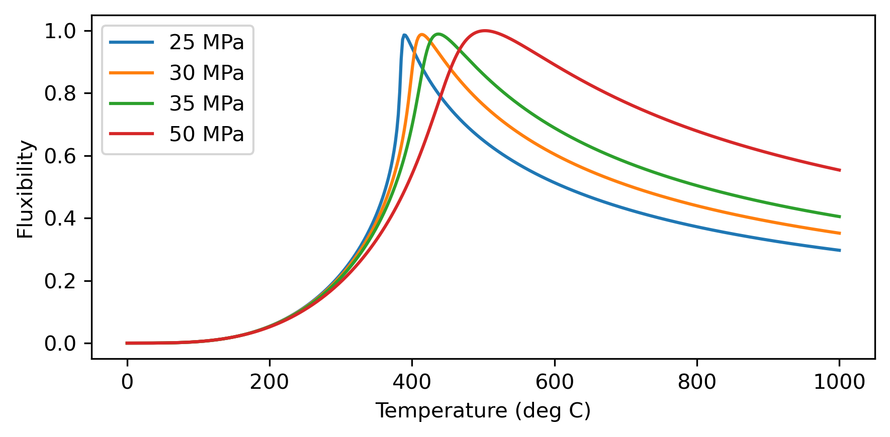

Thermodynamic properties of pure water
[10]:
# import libraries
import numpy as np
import matplotlib.pyplot as plt
import matplotlib as mpl
mpl.rcParams['figure.dpi']= 300
# import water properties
import iapws
You can find information about the water properties in the following link:
https://iapws.readthedocs.io/en/latest/modules.html
[11]:
#Now compute properties for given pressure and temperature
# pressure and temperature in MPa, and C
p, T =35, 300
#compute properties
steam=iapws.IAPWS97(T=T+273.15, P=p) # note that iaapws uses temperature in K and pressure in MPa
#format the output for printing
output_format = "{:<17} = {:>10.2f} {}\n"
viscosity_format = "{:<17} = {:>10.2e} {}\n"
output = (output_format.format("Density", steam.rho, "kg/m\u00B3") +
output_format.format("Specific heat", steam.cp*1000, "J/(kg\u00B7K)") +
viscosity_format.format("Viscosity", steam.mu, "Pa\u00B7s") +
output_format.format("Specific enthalpy", steam.h, "J/kg"))
print(output)
Density = 757.72 kg/m³
Specific heat = 4990.59 J/(kg·K)
Viscosity = 9.47e-05 Pa·s
Specific enthalpy = 1326.81 J/kg
Now make plots of the fluid properties as a function of temperature and pressure.
[19]:
# start easy and make a single plot of density vs temperature
T=np.linspace(0, 1000, 500) # deg.C
P=np.array([15, 30, 35, 50]) # MPa
# compute density
rho=np.zeros((len(P), len(T)))
for i in range(len(P)):
for j in range(len(T)):
steam=iapws.IAPWS97(T=T[j]+273.15, P=P[i])
rho[i,j]=steam.h
# plot
fig,ax = plt.subplots(1,1, figsize=(6,3))
for i in range(len(P)):
ax.plot(T, rho[i,:], label=f'{P[i]} MPa')
ax.set_ylabel('Enthalpy (J/Kg)')
ax.set_xlabel('Temperature')
ax.legend()
fig.tight_layout()
# save figure
#fig.savefig('density_pt.svg')

Make similar plots for specific heat, enthalpy, viscosity.
[26]:
# start easy and make a single plot of density vs temperature
T=np.linspace(0, 1000, 500) # deg.C
P=np.array([25, 30, 35, 50]) # MPa
# compute density
Fluxibility=np.zeros((len(P), len(T)))
for i in range(len(P)):
rho0 = iapws.IAPWS97(T=5+273.15, P=P[i]).rho
for j in range(len(T)):
steam=iapws.IAPWS97(T=T[j]+273.15, P=P[i])
Fluxibility[i,j]=(rho0-steam.rho)*steam.rho*steam.h/steam.mu
# plot
fig,ax = plt.subplots(1,1, figsize=(6,3))
for i in range(len(P)):
ax.plot(T, Fluxibility[i,:]/np.max(Fluxibility.ravel()), label=f'{P[i]} MPa')
ax.set_xlabel('Temperature (deg C)')
ax.set_ylabel('Fluxibility')
ax.legend()
fig.tight_layout()
# save figure
#fig.savefig('fluxibility_pt.svg')

[ ]:
rho0 = iapws.IAPWS97(T=5+273.15, P=P[i]).rho
[ ]: